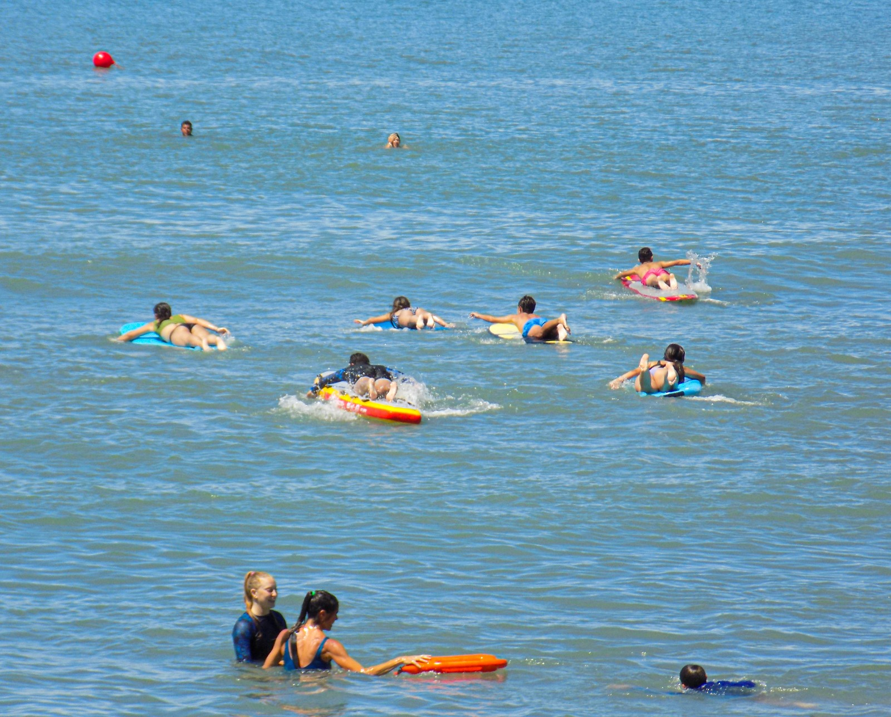
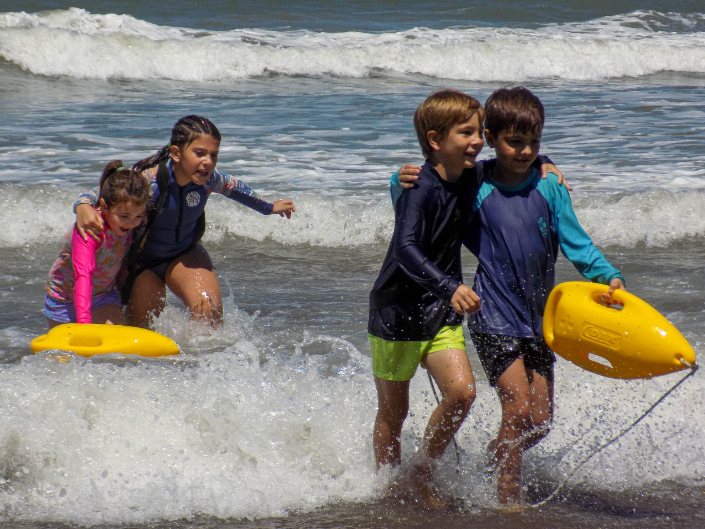

Escuelita · 5 a 7 años
DESCUBRIR EL MAR JUGANDO.
Juego, exploración, primeras nociones de seguridad, actividades con tablas, conocimiento del ambiente y cuidado.
Escuela de Mar · Temporada Educativa 2027 · Verano 2026/2027
El mar como espacio para jugar, aprender, explorar y cuidar.
Una experiencia educativa para chicos y chicas de 5 a 17 años que integra movimiento, actividades marítimas, prevención y conocimiento del ambiente costero.
Inscribite →5 a 17 años
Lunes a viernes
9:30 a 12:30 hs
Verano 2026/2027 · diciembre a marzo
Escuelita · 5 a 7 años
Juego, exploración, primeras nociones de seguridad, actividades con tablas, conocimiento del ambiente y cuidado.
Pre-Salvamento · 8 a 11 años
Mayor autonomía, actividades en el mar, preparación física, tablas, iniciación al salvamento y conocimiento del ambiente marítimo.
Salvamento Junior · 12 a 17 años
Natación, preparación física, técnicas de salvamento, actividades con tablas, prevención, RCP y conocimiento del ambiente.
Una experiencia integral
El movimiento y el salvamento siguen siendo parte de nuestra identidad. Sumamos una mirada socioambiental para descubrir el ambiente costero desde distintas experiencias.
Experiencia marítima
Juegos, actividades con tablas, habilidades acuáticas, cuidado personal, trabajo en equipo y aprendizaje de criterios de seguridad según las edades y las condiciones del día.
Conocimiento del entorno
Observación de la playa, la biodiversidad, los médanos, el viento, las olas y las transformaciones del paisaje costero.
Expresión y creatividad
Experiencias de observación, expresión artística y creación colectiva inspiradas en el mar y su entorno.
Participación comunitaria
Conversaciones y actividades adaptadas a cada edad sobre el cuidado de la costa, los residuos y los desafíos ambientales que afectan a nuestras comunidades.
Las actividades socioambientales complementarias forman parte de una línea pedagógica en desarrollo y se incorporarán según la planificación, el equipo disponible y las condiciones de cada jornada.
Conocer para cuidar
La playa es un espacio vivo: las olas, los vientos, los médanos y los seres que la habitan nos invitan a hacernos preguntas y a comprender nuestro entorno.
Desde la experiencia cotidiana acercamos a chicos y chicas a la educación socioambiental, la prevención y el cuidado compartido del ambiente costero.
Creemos que desarrollar curiosidad, autonomía y participación es una manera concreta de fortalecer nuestra comunidad frente a los desafíos ambientales.

Encuentro → Juego y movimiento → Exploración → Aprendizaje compartido.
Cada jornada se construye a partir del grupo, las condiciones del día y lo que el mar nos propone.
Porque ningún día en el mar es exactamente igual a otro.
Una jornada para conocer y vivir la experiencia de Escuela de Mar.
Participación durante una semana.
Dos semanas para darle continuidad a la experiencia.
Una experiencia sostenida para aprender, ganar confianza y seguir creciendo.
Y, sobre todo, ganas de aprender, jugar y disfrutar del mar.
Las actividades se adaptan a las edades, experiencias y posibilidades de cada grupo. En Escuelita no es necesario saber nadar aún, pero para participar en los grupos Pre-Salvamento y Salvamento Junior el requisito es saber nadar crol.
El mar y las condiciones meteorológicas se observan todos los días. Las actividades se adaptan en función de las condiciones y de la seguridad del grupo.
Aprender cuándo entrar al mar y cuándo no hacerlo también es parte de Escuela de Mar.
No necesariamente. El mar es parte de nuestra escuela, pero cada jornada puede ser diferente. Las condiciones del día, los objetivos de la actividad y las características del grupo determinan qué experiencias realizamos.
Sí. Podés elegir entre las modalidades Día, Semana, Quincena o Mes, de acuerdo con la disponibilidad de cada período.
TEMPORADA EDUCATIVA 2027 · VERANO 2026/2027
Diciembre a marzo · 5 a 17 años · Monte Hermoso
Quiero inscribirme →